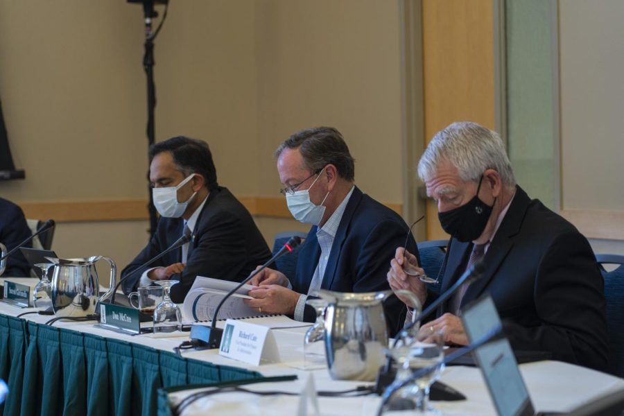

Board of trustees approve proposed tuition freeze and report positive financial prospects for UVM
Don McCree, chair of the Budget, Finance and Investment Committee flips through the pages of the board of trustees meeting itinerary inside the Livak Ballroom 8:30 a.m. Oct. 29. McCree’s term is set to end March 2026. Tyler Nachilly/THE CYNIC
This article was updated Oct. 29 at 3:13 p.m. to correct the name of one of the consulting companies.
The Finance and Investment Committee approved a tuition freeze for the 2022-23 academic year and reported positive financial prospects for the University’s investments at their Oct. 29 meeting.
The Committee approved President Suresh Garimella’s proposed budget, covered in a Sept. 15 Cynic article. The budget kept most costs and fees flat, including the fourth consecutive year of a freeze on tuition costs.
“We’re not doing this because we’ve got tons of money,” Garimella said. “We’re doing this because it’s the right thing to do in the long term.”
The Committee is pleased with enrollment rates, Chair Don McCree said. Garimella said he was thankful UVM admitted the largest first-year class this fall. Having consistent tuition is imperative to maintaining enrollment rates, the Committee said.
“From a competitive standpoint, it’s really, really important to be containing the cost of attendance,” McCree said.
The Committee reported $750 million in total endowment assets, a $188 million increase from last quarter, according to the endowment web page. This increase is due in part to an outside gift to the financial portfolio, McCree said.
UVM gained more revenue from the 2021 fiscal year than expected, letting the committee take less from the University’s reserves, said Richard Cate, vice president of finance and administration.
The Committee also discussed various increased costs during the recent fiscal year, including utilities and higher spending on research.
The Committee changed the adviser to the investment committee from Cambridge Associates to Prime Buchholz. Both are financial investment consulting companies, according to their websites.
Prime Buchholz has access to investments that Cambridge Financial Services doesn’t, McCree said. This transition is still in progress but is expected to conclude by the end of the year.
The Committee plans to increase private investments and decrease public investments over a several year period, McCree said. This transition was driven by changes in the market, Self-Perpetuating trustee David Aronoff said.
The trustees were concerned about the food supply and staff shortages within UVM dining halls and eating locations, McCree said. The staff turnover rate this year was 18%, compared to the usual 6%.
The Committee recognizes the shortage of workers is a global problem not contained to UVM, Cate said. Some board members have been meeting with Sodexo to discuss ways to improve staffing, including increased student workers.
The meeting was adjourned 15 minutes early when no further comments or questions were introduced.